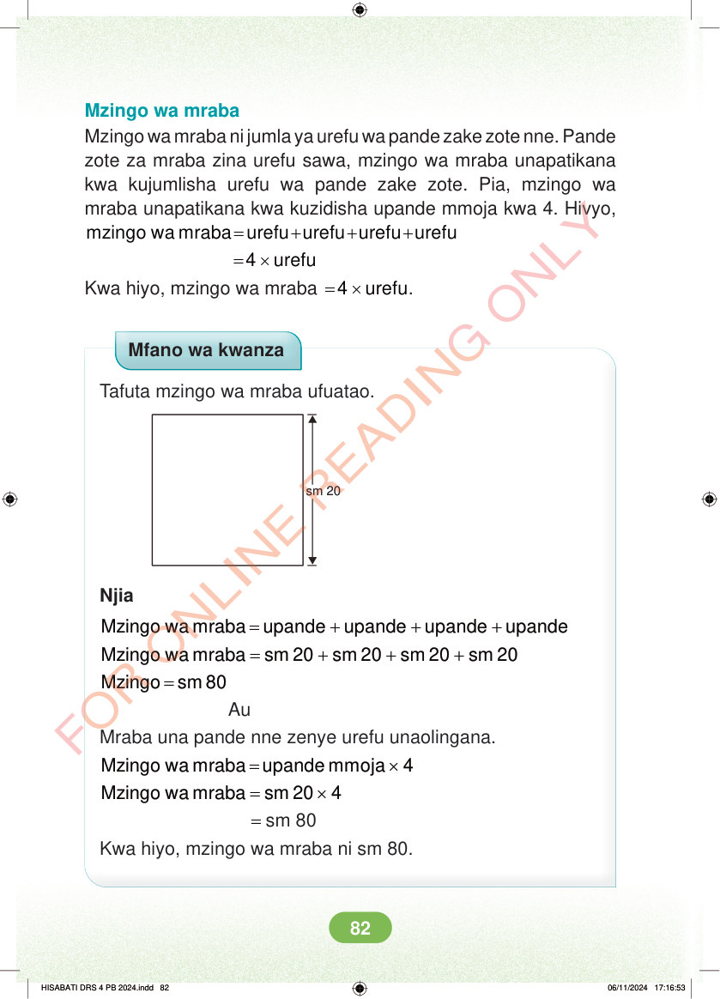

Mzingo wa mraba Mzingo wa mraba ni jumla ya urefu wa pande zake zote nne. Pande zote za mraba zina urefu sawa, mzingo wa mraba unapatikana kwa kujumlisha urefu wa pande zake zote. Pia, mzingo wa mraba unapatikana kwa kuzidisha upande mmoja kwa 4. Hivyo, = + + + mzingo wa mraba urefu urefu urefu urefu = × 4 urefu Kwa hiyo, mzingo wa mraba = × 4 urefu. Mfano wa kwanza Tafuta mzingo wa mraba ufuatao. sm 20 Njia = + + + Mzingo wa mraba upande upande upande upande = + + + Mzingo wa mraba sm 20 sm 20 sm 20 sm 20 = Mzingo sm 80 Au Mraba una pande nne zenye urefu unaolingana. = × Mzingo wa mraba upande mmoja 4 = × Mzingo wa mraba sm 20 4 = sm 80 Kwa hiyo, mzingo wa mraba ni sm 80. HISABATI DRS 4 PB 2024.indd 82 HISABATI DRS 4 PB 2024.indd 82 06/11/2024 17:16:53 06/11/2024 17:16:53